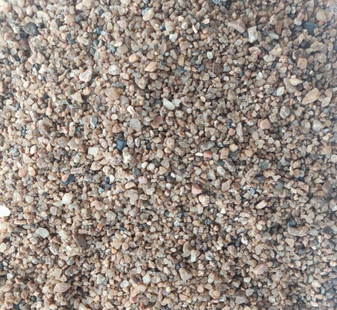
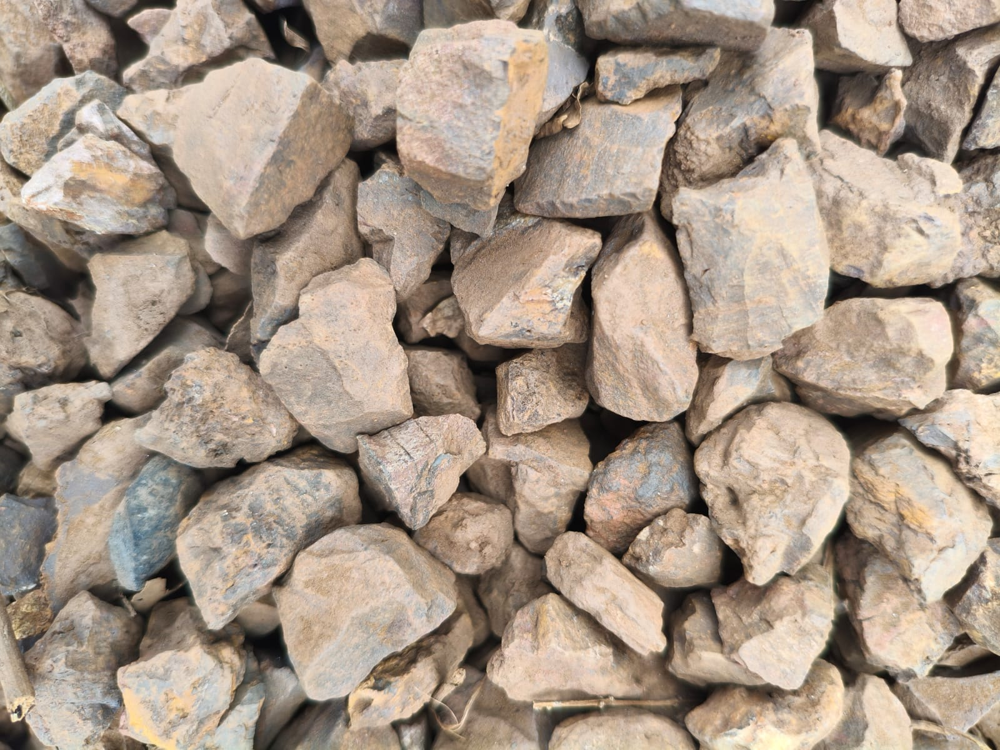
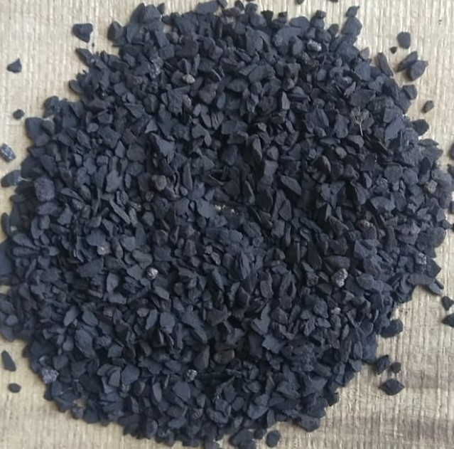
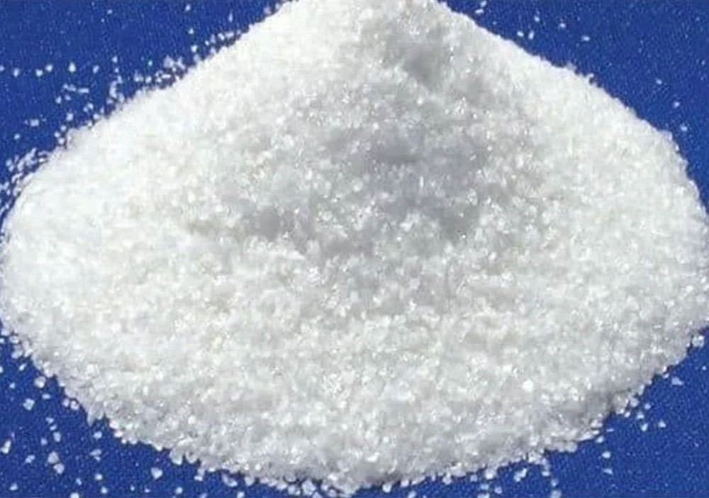
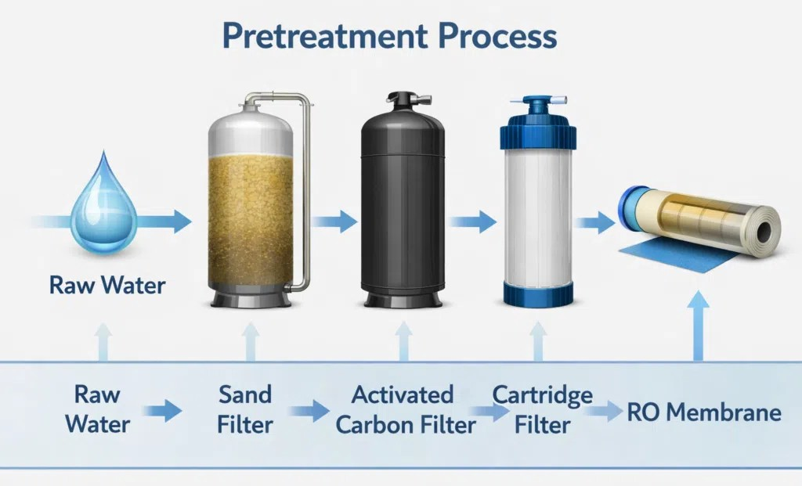
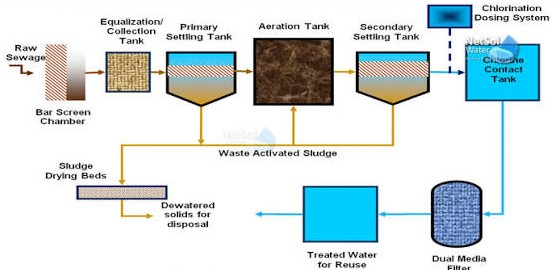
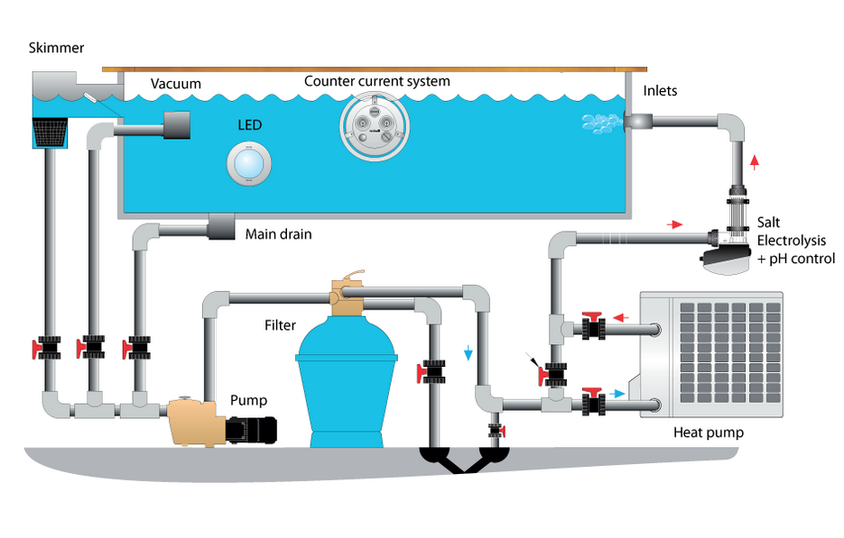
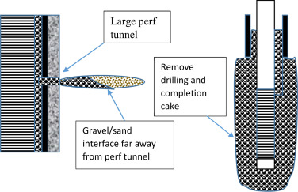
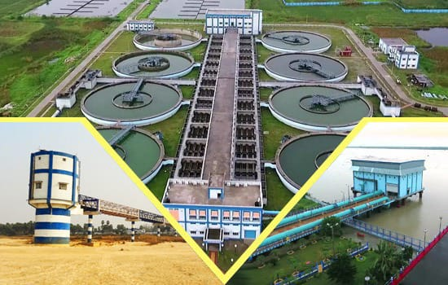

Municipal Water
Municipal Water Treatment
Multi-layer gravel and sand beds for rapid gravity and pressure filters at treatment plants.
Tiwari Traders is a trusted manufacturer and supplier of premium-quality Water Filter Media for industrial, commercial, and water treatment applications. Our product range includes Filter Sand, Filter Gravel, Quartz Silica, Manganese Dioxide (MnO₂), Activated Carbon, and Anthracite, all manufactured to meet high industry standards.
Each product is available in multiple particle-size grades so you can match media exactly to your filter bed design.

Sub-base support media for rapid sand and multimedia filters.

Washed silica-rich sand for turbidity and suspended-solids removal.

High-purity SiO₂ media for RO pre-treatment and pressure sand filters.

Underdrain support layers built for long service life and low attrition.

Underdrain support layers built for long service life and low attrition.

Underdrain support layers built for long service life and low attrition.

Underdrain support layers built for long service life and low attrition.
Scroll sideways to see how graded gravel, sand and quartz media perform across water and process industries.
Multi-layer gravel and sand beds for rapid gravity and pressure filters at treatment plants.

Quartz silica sand reduces turbidity and SDI ahead of membranes, protecting RO elements.

Graded media beds polish effluent before discharge or reuse in industrial process water.

Fine-graded silica sand keeps pool water clear while cutting backwash frequency.

Rounded quartz gravel packs protect well screens and stabilise aquifer sand.

The journey of Tiwari Traders began in 1990 with a vision to deliver high-quality water filtration solutions across India. From our corporate office in Barakar, West Bengal, we started our operations by supplying essential filtration materials such as Filtering Sand, Filtering Gravels, Filtering Quartz Silica, MnO₂, Activated Carbon, and Anthracite.
Send us your flow rate and vessel size — we'll recommend the media layers.